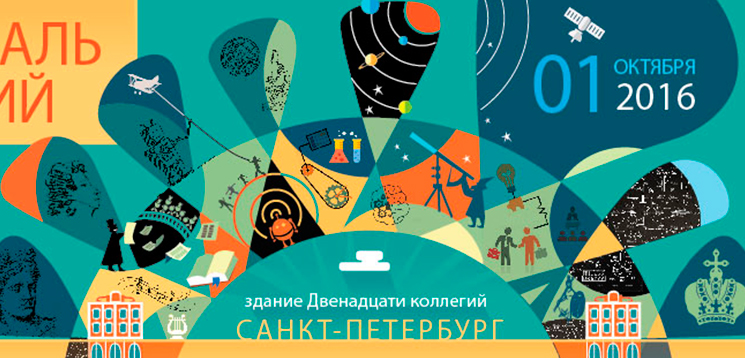
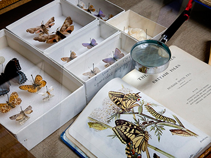
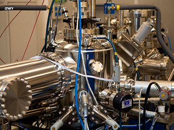
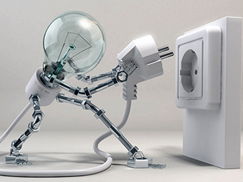

1 октября в СПбГУ впервые пройдет Фестиваль Знаний, который объединит самые интересные достижения ученых, писателей, художников и музыкантов, погрузив своих гостей в атмосферу по-настоящему универсального знания.
Чтобы сориентироваться во всем многообразии лекций, мастер-классов, экскурсий и других событий, Ассоциация выпускников, организующая Фестиваль знаний, подготовила для вас подробный гид!

Гид по фестивалю Знаний
Университет не даром называется «университетом». Открытия чаще всего происходят на стыке самых разных отраслей знания.
«Лекторий»
«Лекторий» объединит известных спикеров-выпускников, преподавателей – «любимчиков» факультетов, малоизвестных в широких кругах, и отобранных специальной комиссией самозаявившихся выступающих от Университета.
Здесь можно будет услышать и длинную лекцию, и выступление в стиле TED, и даже поучаствовать в обсуждении интересных вопросов за круглым столом.

Музеи СПбГУ
Не все знают, что на территории СПбГУ работает 10 интереснейших музеев:
- Музей истории СПбГУ
- Музей-архив им. Д.И.Менделеева
- Зоологический музей
- Музей-коллекция живых культур микроорганизмов (CALU)
- Минералогический музей
- Палеонтологический музей
- Музей В. В. Набокова
- Музей современных искусств им. Дягилева
- Петрографический музей
- Палеонтолого-стратиграфический музей

Научный парк СПбГУ
тоже откроет свои двери для гостей Фестиваля Знаний. 1 октября можно будет увидеть ресурсные центры, оснащенные самым современным оборудованием, которое уже привлекает к работе в нашем городе не только местных, но и зарубежных ученых и узнать о самых интересных проектах.

Технологии
- Уголок виртуальной реальности
- Online экскурсия по ЦЕРН и рассказ о работе на Большом Адронном коллайдере
- Возможность лично столкнуть частицы на игровом ускорителе
- Инновационные инсталляции, арт-объекты
- Зона робототехники.
Физика и химия
для вас пройдут:
- Шоу научных экспериментов
- Фотовыставка моделей лекарственных молекул от Biocad
- Макрофотографии микроорганизмов
- Лекция по мобильной связи от «Билайн» и мобильная передвижная станция
- Возможность лично провести зрелищные опыты – для взрослых и детей.
Биология
- Пройти мастер-класс по проращиванию ростков и приготовлению веганских блюд
- Научиться создавать гербарии
- Прослушать лекцию регионального координатора Балтийской программы WWF – Евгения Генельт-Яновского о том, как изучать местную природу и сохранять ее. Особенно интересно будет здесь семьям с детьми.
- Увидеть объекты, созданные с помощью BioArt – направления искусства, создающего свои произведения из живых организмов при помощи биотехнологий, в том числе клонирования, генетической инженерии, и выращивания тканей.
Валентина Борисова2016-11-17 06:11:33
Ах! - какое умиление! Я такие глиссеры (на колесах и на лыжах для льда) мастерил от нечего делать в детстве, в 6-7м классе. Та же батарейка и моторчик. Запускал и почему-то не умилялся... (А еще делал "самолеты" - батарейка, моторчик с винтом и стабилизатор. К люстре на нитке и летает по комнате самолетик кругами... главное чтобы люстра визела крепко - шаталась под самолетиком неимоверно)
Ответить
Валентина Борисова
2016-11-17 06:11:33
Ах! - какое умиление! Я такие глиссеры (на колесах и на лыжах для льда) мастерил от нечего делать в детстве, в 6-7м классе. Та же батарейка и моторчик. Запускал и почему-то не умилялся... (А еще делал "самолеты" - батарейка, моторчик с винтом и стабилизатор. К люстре на нитке и летает по комнате самолетик кругами... главное чтобы люстра визела крепко - шаталась под самолетиком неимоверно)
Ответить
Валентина Борисова
2016-11-17 06:11:33
Ах! - какое умиление! Я такие глиссеры (на колесах и на лыжах для льда) мастерил от нечего делать в детстве, в 6-7м классе. Та же батарейка и моторчик. Запускал и почему-то не умилялся... (А еще делал "самолеты" - батарейка, моторчик с винтом и стабилизатор. К люстре на нитке и летает по комнате самолетик кругами... главное чтобы люстра визела крепко - шаталась под самолетиком неимоверно)
Ответить
Валентина Борисова
2016-11-17 06:11:33
Ах! - какое умиление! Я такие глиссеры (на колесах и на лыжах для льда) мастерил от нечего делать в детстве, в 6-7м классе. Та же батарейка и моторчик. Запускал и почему-то не умилялся... (А еще делал "самолеты" - батарейка, моторчик с винтом и стабилизатор. К люстре на нитке и летает по комнате самолетик кругами... главное чтобы люстра визела крепко - шаталась под самолетиком неимоверно)
Ответить
Валентина Борисова
2016-11-17 06:11:33
Ах! - какое умиление! Я такие глиссеры (на колесах и на лыжах для льда) мастерил от нечего делать в детстве, в 6-7м классе. Та же батарейка и моторчик. Запускал и почему-то не умилялся... (А еще делал "самолеты" - батарейка, моторчик с винтом и стабилизатор. К люстре на нитке и летает по комнате самолетик кругами... главное чтобы люстра визела крепко - шаталась под самолетиком неимоверно)
Ответить